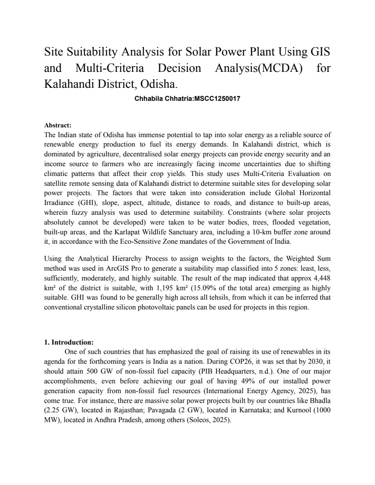
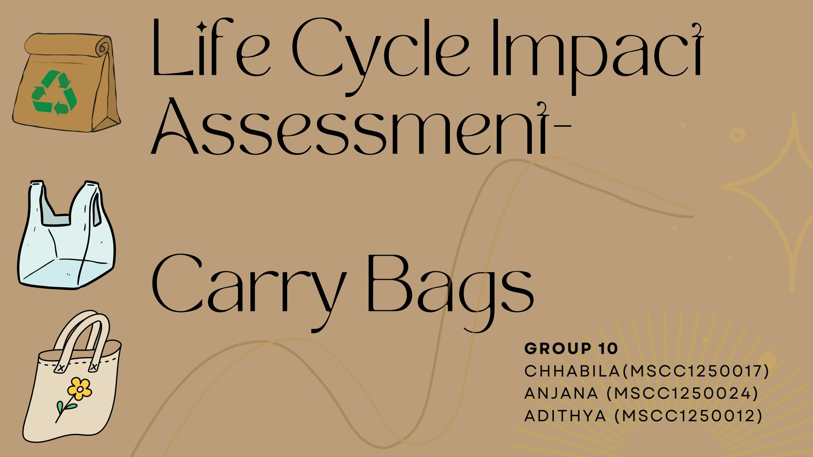
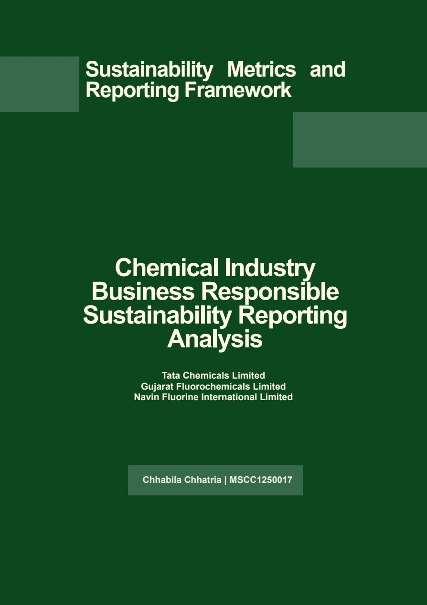
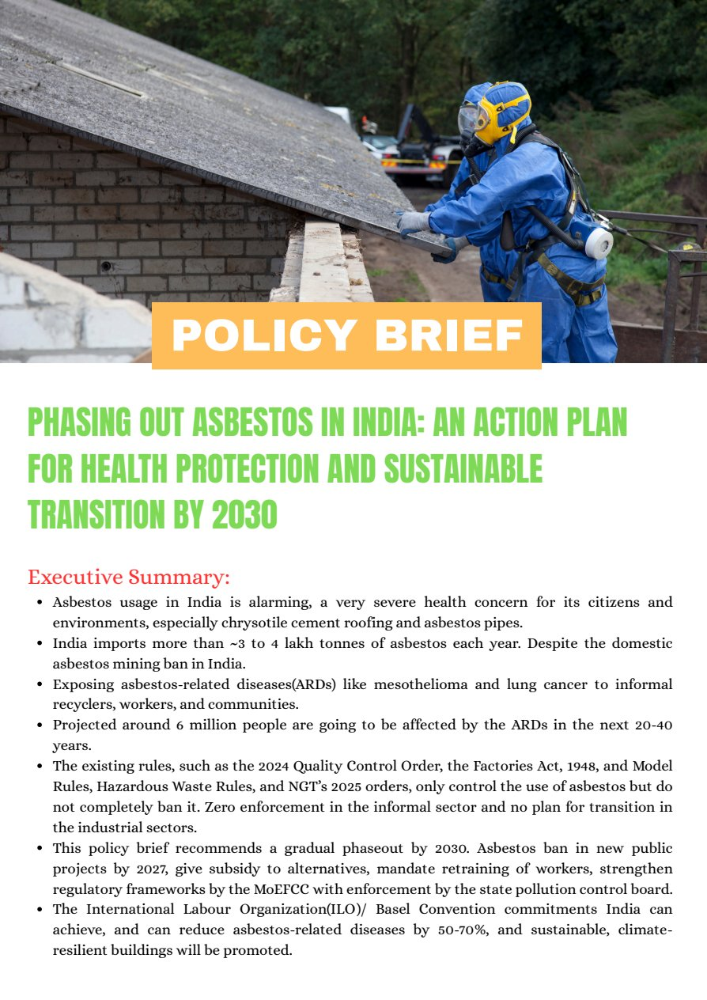
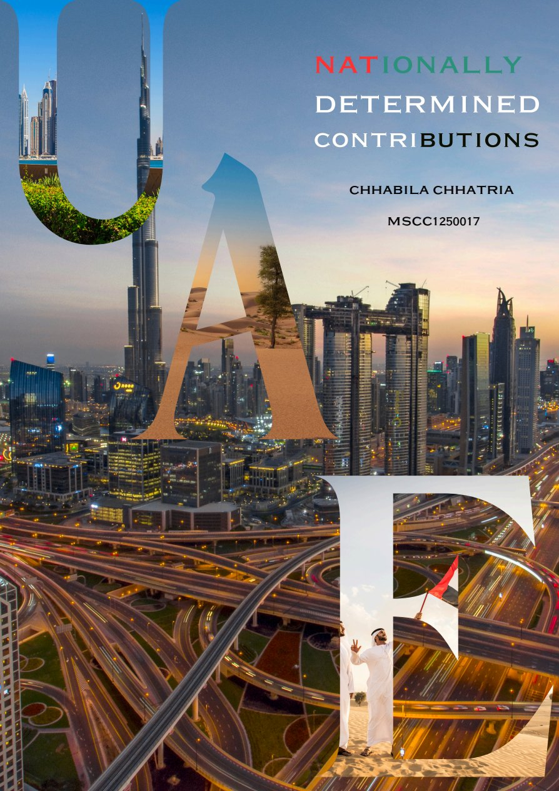
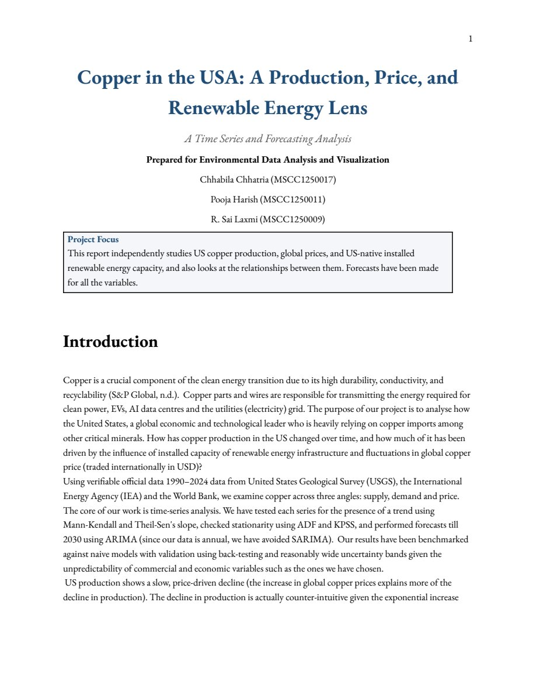

Aspiring Climate Finance & ESG Analyst
Bridging Mathematical Rigor (B.Sc. Utkal University) and Climate & Sustainability Science (Azim Premji University) to drive GHG accounting, ESG metrics, Life Cycle Assessments (LCA), geospatial modeling, and just sustainability transitions.
M.Sc. Climate Change & Sustainability
Azim Premji University, Bengaluru
B.Sc. Mathematics · Utkal University
I am a hands-on, practical solution seeker and quick learner aiming to build a career in Climate Finance, Carbon Markets, GHG Accounting, Renewable Energy, corporate sustainability, and Life Cycle Assessments (LCA).
With a rigorous mathematical foundation from Utkal University and advanced sustainability scholarship at Azim Premji University, I apply quantitative precision and systems thinking to help organizations trace environmental footprints, evaluate climate investment risks, ensure BRSR compliance, and foster equitable community relationships.
Mathematical modeling, R statistical computing, and environmental data visualization.
ArcGIS and TerrSet analysis for solar PV suitability and land-use change mapping.
Corporate sustainability disclosure analysis and carbon emission quantification.
Cradle-to-grave impact evaluation using SimaPro across material supply chains.
14 rigorous courses at Azim Premji University organized into four interdisciplinary research pillars.
Applying mathematical modeling, statistical software, and satellite geospatial data to diagnose environmental stresses and model future scenarios.
Measuring corporate environmental stewardship through standard frameworks, life cycle evaluations, and financial risk mitigation.
Hands-on evaluation of municipal and ecological resource flows, water catchment health, and sustainable waste ecosystems.
Exploring pathways toward 100% renewable energy grids that respect planetary boundaries while ensuring equitable community outcomes.
Real research reports, spatial analyses, and life cycle studies produced during my graduate tenure at Azim Premji University.

GIS & EnergyDetermined optimal land suitability zones for utility-scale solar photovoltaic plants in Kalahandi using GIS, multi-criteria decision analysis (MCDA), slope, solar irradiance, and infrastructure proximities.

LCA ModelingConducted exhaustive cradle-to-grave Life Cycle Assessments on SimaPro comparing paper, plastic, jute, and cotton bags to calculate greenhouse gas emissions, water depletion, and ecotoxicity scores.

ESG & ReportingAnalyzed SEBI Business Responsibility and Sustainability Reports (BRSR) of leading Indian firms to evaluate Scope 1 & 2 emissions disclosures, resource intensities, community spending, and ESG gaps.

Policy & HealthPolicy roadmap examining occupational exposure, economic reliance, health liabilities, and viable substitutes to chart a just economic transition phasing out asbestos roofing across Indian states.

Climate PolicyDetailed policy dissection of UAE's Third Updated NDC under the Paris Agreement, evaluating sectoral decarbonization, carbon capture utilization and storage (CCUS), and clean hydrogen investments.

Material FlowComprehensive material flow analysis assessing copper extraction, refinery emissions, recycling loops, and the escalating demand driven by electric vehicle motors and clean energy transmission.
Guided by globally recognized faculty and climate researchers at Azim Premji University.
Renowned Ecologist & Professor
Azim Premji University, Bengaluru
Globally recognized ecologist, author, and researcher in urban sustainability, forest ecology, and human-nature interactions.
Earth Observation & Climate Scientist
Azim Premji University, Bengaluru
Leading researcher in remote sensing, terrestrial ecosystems, carbon dynamics, and satellite geospatial analytics.
Azim Premji University, Bangalore
Concentrations in Climate Investment & Risks, Life Cycle Assessment (SimaPro), Geospatial Analytics (ArcGIS/TerrSet), Sustainable Water & Waste Management, and Energy Modeling.
Utkal University, Khordha, Odisha
Rigorous quantitative training in Calculus, Differential Equations, Linear Algebra, Probability, Statistical Analysis, and Mathematical Logic.
Bandhakana, Kalahandi, Odisha
Actively seeking opportunities in Climate Finance, Carbon Markets, ESG Consulting, Sustainability Analytics, and Research roles.
I welcome conversations with research institutions, ESG consultancies, think tanks, and sustainability leaders.